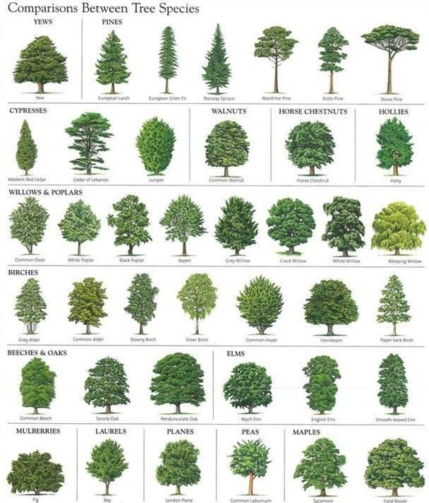
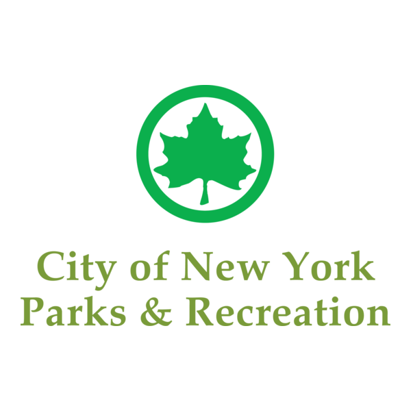

➼ This website features the dataset "2015 Street Tree Census - Tree Data". In the following pages, you will be able to explore detailed information on the different trees recorded across New York City and an analysis on them. Each card includes the following information: Tree species, Zipcode, Address, Status, Damage caused, Health, and Problems.
➼ In the "Info Cards" web page, 1,000 information cards are shown of the different trees of this census. With this data, you can filter/search to easily find results you are looking for. The wepage will provide information on how to use the filtering options.
➼ In the "Analysis" web page, there are 3 different types of charts: Bar, Pie, and Donut Chart. There, you will be able to see the difference numbers and percentages of specfic aspects of the street trees. The three different scenarios are shown in that webpage.

➼ This dataset is by the New York City Department of Parks and Recreation (DPR). It is the agency responsible for managing and maintaining the city's parks, street trees, and green spaces. To care for NYC's urban forest, DPR conducts periodic citywide street tree censuses. This dataset includes detailed information about the street trees recorded across NYC between May 2015 and October 2016.
➼ The 2015 Street Tree Census was the largest citizen science initiative in DPR's history and continues to support the agency's long term forestry management efforts.
➼ This dataset is significant because it offers a citywide inventory of NYC's street trees, helps DPR manage tree health/maintenance, and provides easy access to an environmental data collection. By using this dataset in this website, users are allowed to explore tree data visually/interactively (user-friendly way).